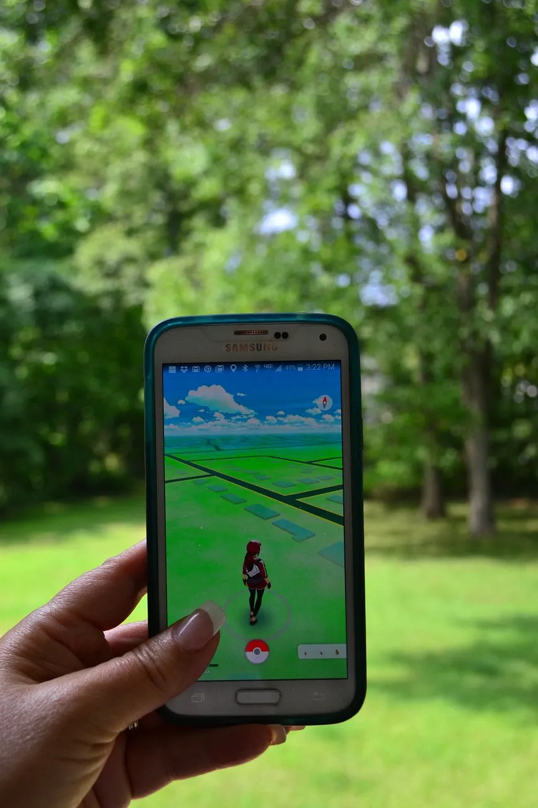

La icónica Xbox 360, una consola que marcó una era
en la industria del videojuego, aún encuentra seguidores
fieles incluso años después de su lanzamiento. Recientemente,
Microsoft anunció que ofrecerá soporte extendido para Xbox
Live en la Xbox 360, garantizando que los jugadores continúen
disfrutando de funciones en línea en esta veterana consola.
Sony, líder en la industria de la electrónica y el
entretenimiento, ha anunciado el lanzamiento de su última
consola de videojuegos, la PlayStation 5 Pro. Esta nueva versión
promete una mejora significativa en el rendimiento gráfico y
la velocidad de carga, lo que ofrece a los jugadores una
experiencia de juego aún más inmersiva. Además, Sony ha revelado
su compromiso con la expansión de su catálogo de juegos exclusivos,
lo que aumenta la emoción entre la comunidad de jugadores.

El popular juego para dispositivos móviles 'Pokémon GO' ha
anunciado una emocionante colaboración con la franquicia Pokémon
Legends. Esto permitirá a los entrenadores explorar una nueva
región inspirada en los juegos de consola, donde podrán encontrar
Pokémon únicos y participar en aventuras inéditas.